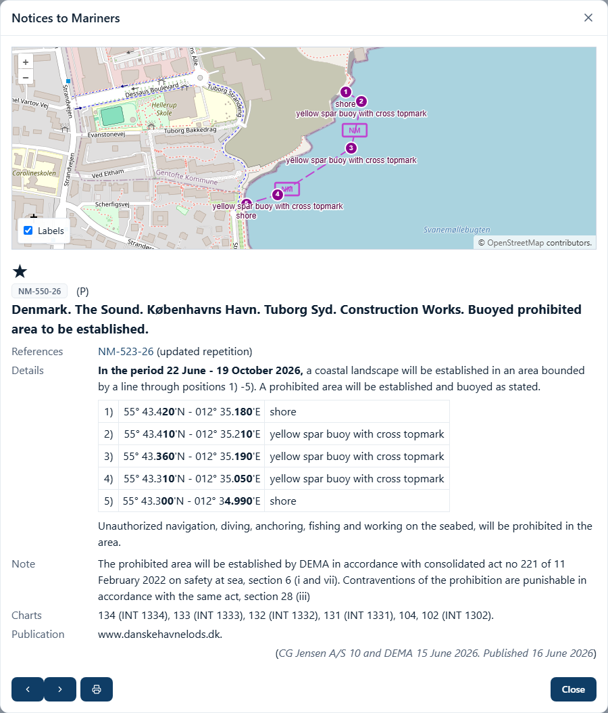
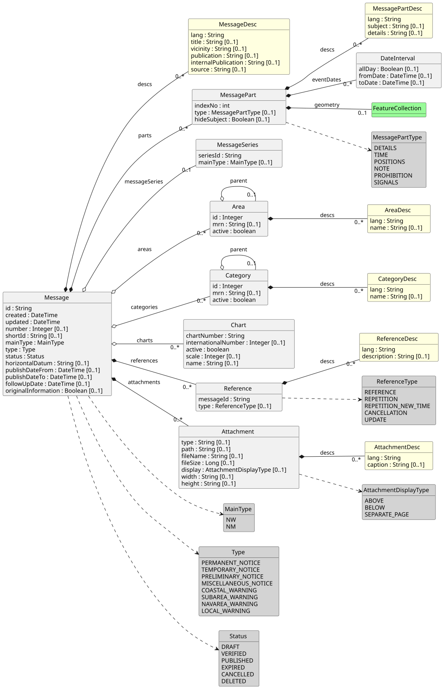
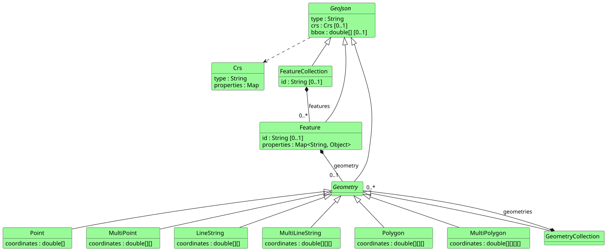
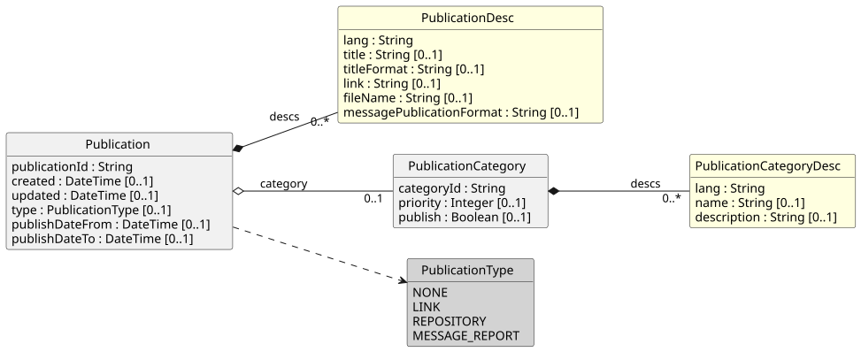

1. Introduction
Niord is a system for writing, publishing and archiving Navigational Warnings (NW) and Notices to Mariners (NM). It is developed and run by the Danish Emergency Management Agency. A country builds its own deployment on the base product described here, with its own areas, message series and texts.
This document describes the data model in which Niord hands messages and publications to other systems. It is the model the Niord Public API returns, and the Niord Message Presentation guidelines describe how a client shows it to a reader. The administration application works on a richer internal model, which is not described here.
The model consists of three parts, each with a chapter of its own:
-
The message model: a message, its parts, and the base data it refers to (areas, categories, charts and message series).
-
The GeoJSON model: the geometry of a message part, with the feature properties Niord adds.
-
The publication model: the publications, such as a weekly Notices to Mariners issue, that the public API lists and that messages cite.
The model is defined by the Java classes of the package org.niord.model in the Niord backend. In
the source code, which is published under https://github.com/NiordOrg, they are in the folder
be/niord/src/main/java/org/niord/model.
1.1. How the model is written in JSON
The public API answers in JSON. The following rules hold for every class in this document:
-
A field without a value is left out: the API never sends
null. A list that has no entries is usually left out as well, but not always; a publication without descriptions, for example, is sent with"descs": []. The tables say for each field whether it is always sent or optional; a client must be prepared for an optional field to be missing, and for a list to be empty. -
A date and time (the type DateTime in the tables) is by default a number: the milliseconds since 1 January 1970 00:00 UTC, for example
1787115206000. When the request asks fordateFormat=ISO_8601, it is a text in the ISO 8601 format instead, for example"2026-08-18T08:13:26.000+00:00". -
An enumerated value, such as a message type, is written in capital letters, for example
"TEMPORARY_NOTICE". -
A language is a two-letter ISO 639-1 code, such as
"en". -
A type written
X[]in the tables is a list (a JSON array) ofX. -
A client should ignore fields it does not know. Niord ignores unknown fields itself, and a later version may add fields.
The message model is also published as an XML Schema, which the public API serves (see the XSD endpoint). The schema describes the structure of the message model; the API itself answers in JSON only. The publication model is not part of the schema.
2. Niord Message Model
The Niord message model is one model for both Navigational Warnings (NW) and Notices to Mariners (NM). Other systems receive messages in this model from the public API, which a test system serves at niord.staging.brs2.dk. The API is documented in the Niord Public API document, and the Niord Message Presentation document gives guidelines for how a client should show a message to a reader.

2.1. Background
The structured data of the model caters for the requirements that the specifications for Maritime Safety Information (MSI) and for Notices to Mariners set out, that is, the relevant parts of:
-
The joint IHO-IMO-WMO standard S-53 on Maritime Safety Information.
-
The IHO standard S-4, which covers Notices to Mariners.
-
The revised NAVTEX Manual (an IMO MSC circular).
-
The IMO International SafetyNET Manual.
The model is a further development of the work done in the EU-funded ACCSEAS project, documented in the ACCSEAS WP6 MSI/NM (T&P) Service Description.
2.2. Message Model Class Diagram
The class diagram below shows the classes of the message model, their fields and how they are
related. A field marked [0..1] is optional; the tables further down say the same for every field.

The diagram uses the following colours:
-
Grey: an enumeration, a closed list of values.
-
Yellow: a localized description class, one entry per language (see Design Patterns below).
-
Green: the geometry, which follows the Niord GeoJSON Model of the next chapter.
A line with a filled diamond means that the class belongs to the message and exists only as part of it. A line with an open diamond means that the class is base data that the producing system maintains on its own (areas, categories, charts and message series), and that the message only refers to it.
2.3. Design Patterns
The model generalizes the parts and fields of NW and NM messages, and adds support for:
-
Several languages. A message can be written in any number of languages, and so can the base data it refers to (an area’s name, for example). Every class with texts that depend on the language has a list of description entries,
descs, each with an ISO 639-1 language code (lang) and the texts in that language. The description classes are yellow in the diagram. -
Rich text. A Notice to Mariners in particular can hold tables, links and pictures. The details of a message part are therefore HTML.
-
Message series. The S-4 and S-53 standards loosely describe a numbering scheme for NW and NM. The scheme does not make a number unique in a combined NW and NM model, nor in a system holding the messages of several authorities, so the model groups messages into message series, each with its own numbering.
-
Base data. Areas and categories are trees of any depth, maintained in the producing system, rather than a fixed number of levels with fixed values.
The remainder of the chapter describes the classes one by one.
2.4. Message Model Classes
2.4.1. MessageSeries
According to the IHO, NW and NM must be numbered. For NW, for example, the standard says:
Navigational warnings in each series should be consecutively numbered throughout the calendar year, commencing with 1/YY at 0000 UTC on 1 January.
A number alone is not unique in a combined NW and NM model, nor in a system that holds the messages of several countries and authorities. The model therefore groups messages into message series. A country may have one series for NW and one for NM, but it may also give, say, a local harbour authority a series of its own for local warnings, or divide the country into regions, each with its own series.
| Attribute Name | Type | Present | Description |
|---|---|---|---|
seriesId |
String |
Always |
The id of the message series in the producing system, for example
|
mainType |
MainType |
Optional |
Either |
2.4.2. Chart
A message can name a list of sea charts. The charts are base data, maintained in the producing system.
| Attribute Name | Type | Present | Description |
|---|---|---|---|
chartNumber |
String |
Always |
The national chart number, which identifies the chart. |
internationalNumber |
Integer |
Optional |
The international (INT) chart number, for example |
active |
Boolean |
Always |
Whether the chart is still in use in the producing system. |
scale |
Integer |
Optional |
The scale of the chart, written as the denominator: |
name |
String |
Optional |
The name of the chart. |
2.4.3. Area
The IHO standards for NW and NM both name places on several levels (general area and locality for NW; general region, sub-region and specific location for NM). Niord generalizes this into a tree of areas of any depth, with a localized name for each area, maintained in the producing system. A message names a list of these areas, and with each area its parent areas.
A message can also have a localized vicinity text (a field of MessageDesc) for a place that the area tree does not hold.
| Attribute Name | Type | Present | Description |
|---|---|---|---|
id |
Integer |
Always |
The id of the area in the producing system. |
mrn |
String |
Optional |
A globally unique Maritime Resource Name (MRN) of the area, for example
|
active |
Boolean |
Always |
Whether the area is still in use in the producing system. |
parent |
Area |
Optional |
The parent area. Every area except the top of the tree has one, so a
client can follow the line of parents to group and sort messages by area. |
descs |
AreaDesc[] |
Optional |
The localized names of the area. See AreaDesc. |
| A client may use the areas of a message to group or filter messages, but has no need to show them to the reader: the areas are usually part of the message title already. |
2.4.4. AreaDesc
The localized fields of an area.
| Attribute Name | Type | Present | Description |
|---|---|---|---|
lang |
String |
Always |
The ISO 639-1 language code. |
name |
String |
Optional |
The name of the area in this language. |
2.4.5. Category
Categories form a tree of any depth, with a localized name for each category, maintained in the producing system. A message names a list of categories, and with each category its parent categories.
At the top of the tree are categories such as Aids to Navigation, Drifting Objects and Obstruction, which is the grouping the IHO standards use. The categories below them name the kinds of hazard within the parent category. Examples, from the top down:
-
Aids to Navigation → Floating Aids to Navigation → Buoy → Buoy Established
-
Aids to Navigation → Light → Light Unlit
-
Obstruction → Diving Operation
| Attribute Name | Type | Present | Description |
|---|---|---|---|
id |
Integer |
Always |
The id of the category in the producing system. |
mrn |
String |
Optional |
A globally unique Maritime Resource Name (MRN) of the category. |
active |
Boolean |
Always |
Whether the category is still in use in the producing system. |
parent |
Category |
Optional |
The parent category. Every category except the top of the tree has one. |
descs |
CategoryDesc[] |
Optional |
The localized names of the category. See CategoryDesc. |
| Categories are mainly for filtering and for choosing how to draw a message, for example with a special symbol. There is no need to show them to the reader on their own. |
2.4.6. CategoryDesc
The localized fields of a category.
| Attribute Name | Type | Present | Description |
|---|---|---|---|
lang |
String |
Always |
The ISO 639-1 language code. |
name |
String |
Optional |
The name of the category in this language. |
2.4.7. Reference
A reference from one message to another.
| Attribute Name | Type | Present | Description |
|---|---|---|---|
messageId |
String |
Always |
The id of the message referred to. It is usually the short id of the other message (see Message), and a client can then link to it; the public API resolves a short id as well as a message id. The model does not require any format, however. |
type |
ReferenceType |
Optional |
The kind of reference: |
descs |
ReferenceDesc[] |
Optional |
The localized description of the reference. See ReferenceDesc. |
2.4.8. ReferenceDesc
The localized fields of a reference.
| Attribute Name | Type | Present | Description |
|---|---|---|---|
lang |
String |
Always |
The ISO 639-1 language code. |
description |
String |
Optional |
A text about the reference, for example |
2.4.9. Attachment
A message can have a list of attachments, such as pictures and PDF files. The files are kept in a public repository of the producing system.
| Attribute Name | Type | Present | Description |
|---|---|---|---|
type |
String |
Optional |
The media type of the file, for example |
path |
String |
Optional |
Where the file is. When the public API rewrites links (its |
fileName |
String |
Optional |
The file name. |
fileSize |
Long |
Optional |
The size of the file in bytes. |
display |
AttachmentDisplayType |
Optional |
How the editor meant a picture or video to be shown with
the message: |
width |
String |
Optional |
The width to show a picture or video in, with its unit ( |
height |
String |
Optional |
The height to show a picture or video in, written like |
descs |
AttachmentDesc[] |
Optional |
The localized caption. See AttachmentDesc. |
| A client that works offline should download the attachments and rewrite their paths. Since the HTML of a message part (see MessagePartDesc) may show a picture or link to a file in the same repository, that HTML has to be rewritten too. |
2.4.10. AttachmentDesc
The localized fields of an attachment.
| Attribute Name | Type | Present | Description |
|---|---|---|---|
lang |
String |
Always |
The ISO 639-1 language code. |
caption |
String |
Optional |
A caption to show with the attachment. |
2.4.11. DateInterval
A message part has a list of event date intervals, each of which may be open at one end. Together they give the time in which the hazard or event of the part applies.
| Attribute Name | Type | Present | Description |
|---|---|---|---|
allDay |
Boolean |
Optional |
When |
fromDate |
DateTime |
Optional |
The start of the interval. |
toDate |
DateTime |
Optional |
The end of the interval. When it is missing, the interval has no end. |
| A client may use the event dates to filter messages, for example for relevance to a planned route. It should not show them to the reader as they are: the details text of the part already states the dates in words (see MessagePartDesc). |
2.4.12. MessagePart
A message has an ordered list of message parts, which can be thought of as sub-stories. Each part gives the time, the positions, a subject and a description of one hazard or event.
| Attribute Name | Type | Present | Description |
|---|---|---|---|
indexNo |
Integer |
Always |
Kept for compatibility. The public API always sends |
type |
MessagePartType |
Optional |
The kind of part, which a client may use as a heading: |
eventDates |
DateInterval[] |
Optional |
The time in which the hazard or event of the part applies. See DateInterval. |
geometry |
FeatureCollection |
Optional |
The positions of the part, as a GeoJSON FeatureCollection. The Niord GeoJSON Model chapter describes it. |
descs |
MessagePartDesc[] |
Optional |
The localized subject and details. See MessagePartDesc. |
hideSubject |
Boolean |
Optional |
When |
2.4.13. MessagePartDesc
The localized fields of a message part.
| Attribute Name | Type | Present | Description |
|---|---|---|---|
lang |
String |
Always |
The ISO 639-1 language code. |
subject |
String |
Optional |
The subject of the hazard or event, in a few words, for example
|
details |
String |
Optional |
The full description of the hazard or event, as HTML. It can hold paragraphs, tables (position tables among them), lists, links and pictures. The presentation guidelines say which HTML classes it uses. |
2.4.14. Message
The Message class is one complete Navigational Warning (NW) or Notice to Mariners (NM).
NW and NM share the one Message class on purpose, rather than having a class each. The reason is that the two are expected to grow together once they are promulgated by electronic means only.
| Attribute Name | Type | Present | Description |
|---|---|---|---|
id |
String |
Always |
The id of the message in the producing system: a UUID that never changes, for
example |
created |
DateTime |
Always |
When the message was created in the producing system. |
updated |
DateTime |
Always |
When the message was last changed in the producing system. |
messageSeries |
MessageSeries |
Optional |
The message series of the message. See MessageSeries. |
number |
Integer |
Optional |
The number of the message within its message series. A message in a series without numbering has none. |
shortId |
String |
Optional |
The short id that readers know the message by, built from the series and
the number, for example |
mainType |
MainType |
Always |
The main type of the message, |
type |
Type |
Always |
The type of the message: |
status |
Status |
Always |
The status of the message. The model has |
areas |
Area[] |
Optional |
The areas of the message, each with its parent areas. See Area. |
categories |
Category[] |
Optional |
The categories of the message, each with its parent categories. See Category. |
charts |
Chart[] |
Optional |
The sea charts the message concerns. See Chart. |
horizontalDatum |
String |
Optional |
The horizontal datum of the positions. When it is missing, assume WGS 84. |
publishDateFrom |
DateTime |
Optional |
When the message was published, or is to be published. |
publishDateTo |
DateTime |
Optional |
When the message was cancelled or expired, or is to expire. |
followUpDate |
DateTime |
Optional |
A date on which the editors mean to look at the message again. It is an aid for the editors and says nothing to the reader. |
references |
Reference[] |
Optional |
The references to other messages. See Reference. |
originalInformation |
Boolean |
Optional |
Whether the message is based on original information. Notices to Mariners traditionally mark such a message with a star (*). |
parts |
MessagePart[] |
Optional |
The message parts. See MessagePart. |
descs |
MessageDesc[] |
Optional |
The localized title and texts. See MessageDesc. |
attachments |
Attachment[] |
Optional |
The attachments. See Attachment. |
2.4.15. MessageDesc
The localized fields of a message.
| Attribute Name | Type | Present | Description |
|---|---|---|---|
lang |
String |
Always |
The ISO 639-1 language code. |
title |
String |
Optional |
The full title line of the message, usually made by joining the area
lineage, the vicinity and the subject of each message part. |
vicinity |
String |
Optional |
A place that the area tree does not hold, for example
|
publication |
String |
Optional |
The publications the message refers to or is published in, as HTML,
since it can link to the publications themselves. The citation of a publication that Niord keeps, a
link or, without an address, a |
internalPublication |
String |
Optional |
The same as |
source |
String |
Optional |
Where the information came from and when, for example
|
3. Niord GeoJSON Model
The positions of a message part are written in GeoJSON, the format that RFC 7946 defines. Niord uses GeoJSON because most map libraries read it directly, and because, unlike for example Well-Known Text (WKT), a GeoJSON Feature has properties, in which Niord stores names and other information that helps a client draw the message.
The geometry of a message part is always a FeatureCollection. Its coordinates are longitude and latitude in decimal degrees on WGS 84, in that order, as RFC 7946 prescribes.
3.1. GeoJSON Model Class Diagram
The class diagram below shows the GeoJSON classes of the model and their fields.

The classes follow RFC 7946, which describes them in full, with three remarks:
-
typeis the name of the class, for example"FeatureCollection","Feature"or"Polygon". It tells a client which of the classes an object is. -
A FeatureCollection has an
id, which RFC 7946 does not define. Niord gives each feature collection and each feature an id of its own, a UUID. -
crsandbboxare part of the model but Niord does not fill them; the coordinates are always on WGS 84.
3.2. Niord GeoJSON Extensions
A client should be able to show the geometry of each message part. On top of the GeoJSON standard, Niord writes a set of Feature properties that a client may use to draw the message better, for example to label a feature or its positions. A client that does not know a property can ignore it, and should ignore properties not listed here.
| Property Name | Description |
|---|---|
name:<lang> |
The name of the whole feature in the language |
name:<x>:<lang> |
The name of one position of the feature in the language |
language |
The language the request asked for (the |
startCoordIndex |
The number that the first position of the feature has in the list of positions of the message,
for example |
restriction |
What the feature means for a ship, which a client may use to choose how to draw it, and whether
to take the message into account in, say, route planning. The values are |
parentFeatureIds |
A feature that the producing system computed from other features. |
The following is the geometry of a message part, shortened, as the public API returns it with
lang=en:
{
"type": "FeatureCollection",
"id": "79e867af-9831-42ef-8f6c-7313d46953c0",
"features": [
{
"type": "Feature",
"id": "9f67fa3f-921f-4c25-b107-98b99ecbea14",
"geometry": {
"type": "Polygon",
"coordinates": [
[
[14.689933333333334, 55.09811666666667],
[14.689733333333333, 55.09968333333333],
[14.688, 55.09961666666667],
[14.687316666666666, 55.09721666666667],
[14.689933333333334, 55.09811666666667]
]
]
},
"properties": {
"language": "en",
"startCoordIndex": 1
}
}
]
}4. Niord Publication Model
Besides single messages, Niord publishes publications: documents a reader can download, such as
a weekly Notices to Mariners issue, an annual summary or a list of lights. A publication is either
a file kept in the producing system, a link to a document elsewhere, or a document the producing
system makes from a set of messages. The public API lists the publications that are current, or
that were current in a given period, and messages refer to publications in their publication
field.
A publication series, such as the weekly Notices to Mariners, is published as one publication per issue. Each published issue appears in the public API as a publication of its own, with the same fields as any other publication.
4.1. Publication Model Class Diagram

The colours and lines mean the same as in the message model class diagram.
4.2. Publication Model Classes
4.2.1. Publication
| Attribute Name | Type | Present | Description |
|---|---|---|---|
publicationId |
String |
Always |
The id of the publication, a UUID. It is the id the public API looks a publication up by, and the id a message’s citation carries (see Publication citations). |
created |
DateTime |
Optional |
When the publication was created in the producing system. |
updated |
DateTime |
Optional |
When the publication was last changed in the producing system. |
category |
PublicationCategory |
Optional |
The category the publication belongs to. See PublicationCategory. |
type |
PublicationType |
Optional |
Where the document of the publication comes from: |
publishDateFrom |
DateTime |
Optional |
When the publication became current. For an issue of a publication series, this is when it became the current issue of the series. |
publishDateTo |
DateTime |
Optional |
When the publication stopped being current. For an issue of a publication series, this is just before the next issue became current. When it is missing, the publication is still current. |
descs |
PublicationDesc[] |
Optional |
The localized title and document. See PublicationDesc. |
4.2.2. PublicationDesc
The localized fields of a publication. A publication may have a different document for each language.
| Attribute Name | Type | Present | Description |
|---|---|---|---|
lang |
String |
Always |
The ISO 639-1 language code. |
title |
String |
Optional |
The title of the publication, for example |
titleFormat |
String |
Optional |
The pattern the producing system made the title from. A client has no use for it. |
link |
String |
Optional |
The address of the document. When the public API rewrites links (its
|
fileName |
String |
Optional |
The file name of the document, for example |
messagePublicationFormat |
String |
Optional |
The text with which a message cites the publication in its
|
4.2.3. PublicationCategory
Publications are grouped into categories, such as the weekly notices and their annexes.
| Attribute Name | Type | Present | Description |
|---|---|---|---|
categoryId |
String |
Always |
The id of the category in the producing system. |
priority |
Integer |
Optional |
The order of the categories: a category with a lower number comes first. The public API lists the publications in this order. |
publish |
Boolean |
Optional |
Whether the publications of the category are public. The public API only
returns publications of categories where it is |
descs |
PublicationCategoryDesc[] |
Optional |
The localized name and description. See PublicationCategoryDesc. |
4.2.4. PublicationCategoryDesc
The localized fields of a publication category.
| Attribute Name | Type | Present | Description |
|---|---|---|---|
lang |
String |
Always |
The ISO 639-1 language code. |
name |
String |
Optional |
The name of the category, for example |
description |
String |
Optional |
A description of the category. |
4.3. Publication citations
The publication field of a message (see the MessageDesc class) is HTML. When a
message cites a publication that Niord keeps, the citation is an element whose publication
attribute holds the publication’s id. It is one of two elements:
-
A link,
<a publication="..." href="..." target="_blank">, when the citation has an address. The address is the one the editor gave when citing the publication, which may lead to a particular page or section; when the editor gave none, it is the address of the publication’s document (thelinkof its PublicationDesc). -
A
<span publication="...">, when there is no address at all.
A client that looks for citations must look for both. For example:
<a publication="f3a2a685-fe2e-48f7-98de-f6459c6667bb"
href="https://www.example.org/pilot" target="_blank">Harbour pilot, section 4.</a>
<span publication="0b6d3c52-6a8e-4f0e-9a3e-2d1c9f7b4e10">List of Lights 2026.</span>A client can use the id to fetch the publication from the public API and, for a publication made
from messages, to list its messages (see the messages
endpoint and its publication parameter). The publication endpoint answers only for a
publication that is public now. The messages endpoint also accepts the id of a publication-series
issue that has since been withdrawn from the public list, so the messages of an old citation can
still be listed. A message may also cite a publication that is not public at all, such as one kept
for the editors' own use, and the API then answers as it does for an unknown id. The publication
attribute is not standard HTML, so a client that cleans the HTML before it shows it may drop the
attribute; the link itself still works.